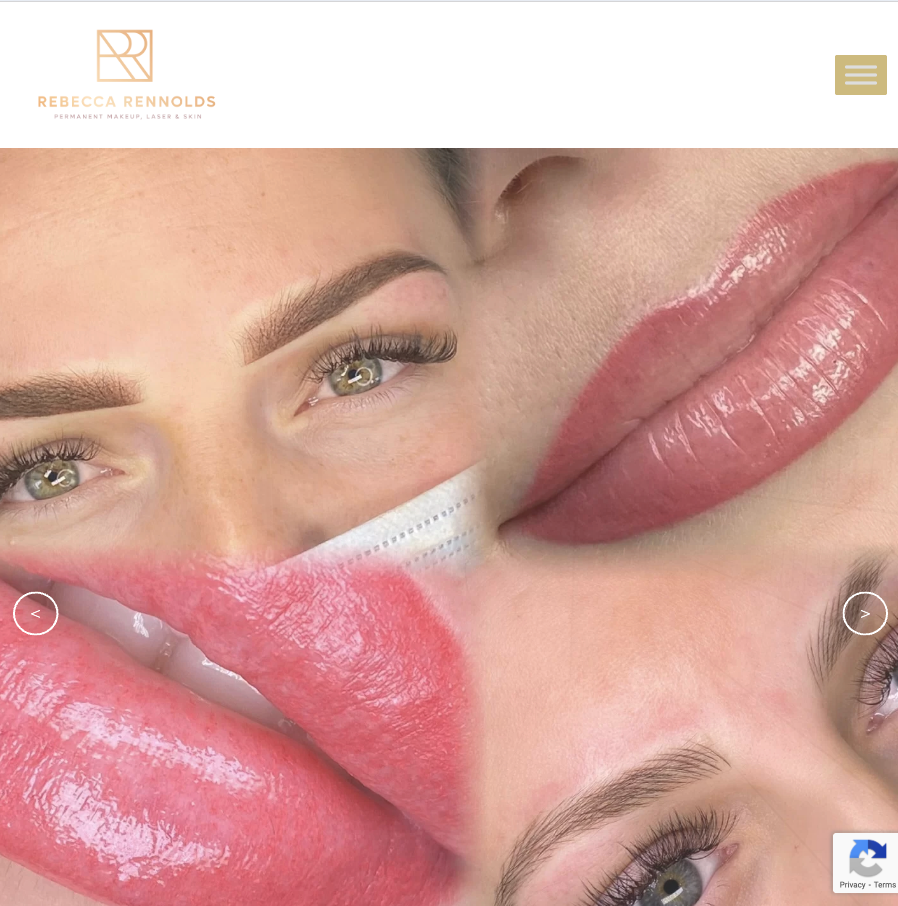
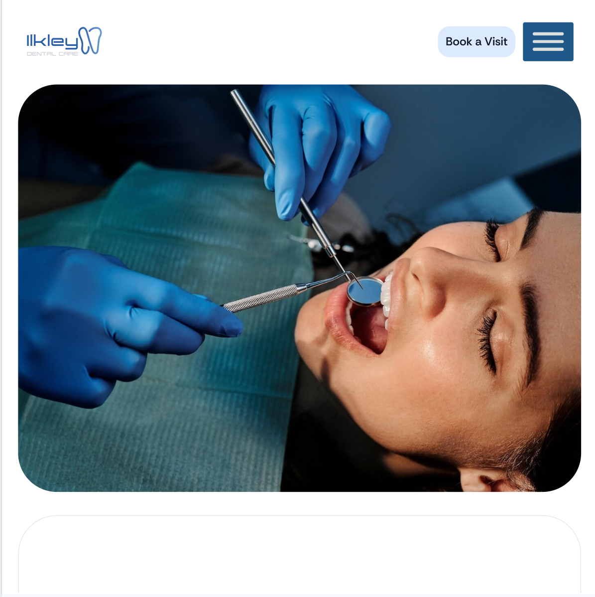

A website builtaround enquiries,not applause.
A new WordPress website built around generating enquiries, not just looking good. I handle strategy, copy guidance, design, build and launch, then stay on to look after it.

visits per month for Rebecca Rennolds Permanent Beauty, built from scratch with no existing website.
Everything it takes to launch properly.
No bolt-on extras and no surprise invoices. Every build includes the strategy, design and training you need for the site to do its job from day one.
And because I build it by hand, you can edit it yourself without phoning me on a Sunday.
- ✓Discovery & strategy session
- ✓Custom design in Figma
- ✓Hand-built WordPress (no page builders)
- ✓Copywriting guidance
- ✓On-page SEO foundations
- ✓Mobile-first, fast by default
- ✓Editor training video
- ✓30 days of post-launch fixes
How it goes.
Free call
A proper conversation about your business, not your colour scheme.
Discovery
Your customers, what they need to see, and what is getting in the way.
Design
Figma drafts you can mark up, built around the path to enquiry.
Build
Hand-built WordPress. No bloated page builders.
Launch + care
Live, trained, and looked after long after handover.

Not quite you?
Already got a site that's stuck?
Developer gone quiet, locked out, or paying too much. I take it over and sort it out.
Not sure what's wrong?
Send me your address and I'll tell you what's holding it back and what to fix first.
Just need it looked after?
Hosting, updates, backups and edits, handled by a real person in Skipton.
Let's build something that earns its keep.
Start with a free 30-minute call. No deck, no questionnaire, just a proper conversation about your business.